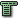

-

Dynarch_Menu
-
 _Overview
_Overview
- _Features
- _Documentation
- FA_Q
-
_Browser support
-
 _Gecko
_Gecko
- Internet E_xplorer/Win
- _Opera
- _Konqueror
- Apple _Safari
-
-
Samples
- Examples index
- Item actions
- Really big menus
- Clone popups
- Context menus part #1
- Context menus part #2
- Context menus part #3
- Context menus part #4
- Keyboard-triggered popup menus
- Individual customization
- Electric menus
- Cross-frames menus (horizontal)
- Cross-frames menus (vertical)
- HTML in menu items
- HTML popups
- Include icons
- Fixed menu using IFRAME
- Using images in menu bar
- Position test: bottom-left
- Right-aligned items
- Scrolling menus
- <select> in top menu bar
- Windowed controls
- Ugly skin sample
- Menu timeouts
- Creating a Toolbar!
- Vertical menus
-
 _License
_License
-
-
 _Preferences
_Preferences
- _Links
- _dynarch.com
Please wait —— loading.
We are preloading all skins and all images, so please be patient.
In practice, if you are only loading one skin, the menu will load much faster.